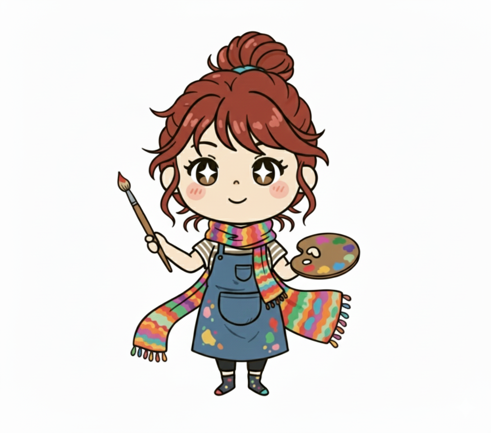

OLCG - 対話で築くプロジェクトマネージャータイプ
「みんなで決めようか。」対話とルールでクラスを導くスマートな調整役

１．基本性格
あなたは、クラスを一つのプロジェクトチームと捉え、その成功に向けて論理的なプロセスを設計するスマートな管理者です。教師が一方的にルールを決めるのではなく、生徒たちとの対話を重視し、全員が納得できる「仕組み」を作ることでクラスをまとめます。感情論よりも合理性を重んじ、フレンドリーな雰囲気の中で、効率的に物事を進めることを得意とします。あなたにとって理想のクラスとは、明確なルールの上で、生徒たちが自律的に機能する組織なのです。
２．あなたの強み
最大の強みは、民主的で合理的なプロセスを通して、集団の合意を形成する能力です。生徒と近い距離で対話を行うため、不満や意見を早期に吸い上げ、それを論理的に分析し、全員が納得できるルールや計画に落とし込むことができます。そのため、あなたの作るルールは形骸化せず、実際に機能します。また、冷静で公平な視点を持っているため、生徒間のトラブルに対しても、感情に流されず、双方の意見を聞いた上で論理的な解決策を提示することができます。
３．あなたの弱み
合理性や効率を重視するあまり、ルールや計画から外れる「遊び」や「無駄」を許容できない傾向があります。全ての物事を論理で解決しようとするため、理屈では説明できない生徒の感情的な悩みや、非効率に見える情熱的な行動に対して、どう対応して良いか分からなくなることがあります。また、話し合いを重視するスタイルは、時として意思決定に時間がかかりすぎ、すぐに行動したい生徒をじれったくさせてしまう可能性も。冷たいわけではないのに「理屈っぽい」と見られてしまうこともあります。
４．ワンポイントアドバイス
あなたの作る論理的な仕組みは、クラスの安定した土台となります。その土台の上に、さらに彩りを加えるため、あえて「目的のない雑談」の時間や、「結論を出さない話し合い」を設けてみましょう。生徒の感情的な側面や、一見非合理に見えるアイデアの中に、プロジェクトを飛躍させるヒントが隠れているかもしれません。時には「理屈は分からないけど、面白そうだからやってみよう」と、直感で動いてみることも、あなた自身の新たな可能性を引き出すきっかけになるはずです。
５．他のタイプとの相性
✨ 【支え合う関係】

APDI異能を見出すスカウトマン
🤝 【強みを増幅する関係】

OLDG学校のシステム管理者
⚠️ 【対立する関係】
APDG芸術系の自由人顧問
💣 【弱みを増幅する関係】

ALCG探求学習のファシリテーター